DatatransferTeststep
A Datatransfer teststep allows you to query results from teststeps in the current testcase and store them in a variable. This is helpful in cases where you need to establish a set of requests where the input of a request is part of the response of the previous teststep. The Datatransfer Teststep defines a number of different ValueProviders, all of which expect a String expression as query result to store in a variable.
Overview
When you create and select Datatransfer Teststep in the Teststep list view, the following editor appears.
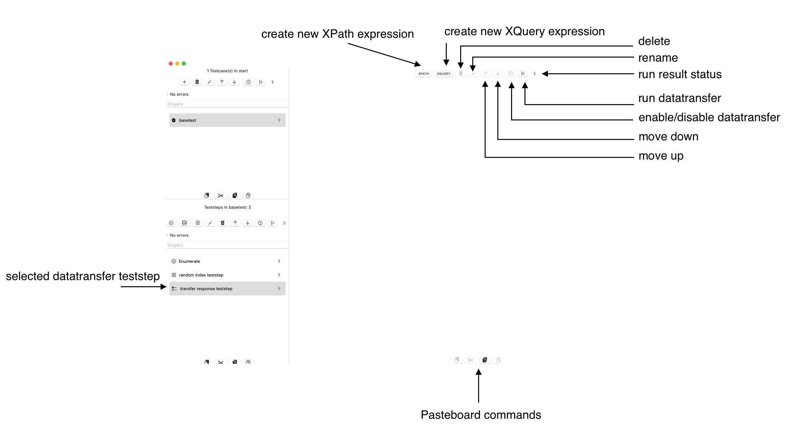
-
create new Javascript expression opens a dialog that creates a Javascript ValueProvider to query data from a HTML teststep in this testcase.
-
create new JSONpath expression opens a dialog to create an JSONPath ValueProvider to query data from a previous HTTP Teststep (request or response) in this testcase.
-
create new XPath expression opens a dialog to create an xpath expression to query data from a previous teststep (request or response) in this testcase.
-
create new XQuery expression opens a dialog to create an xpath expression to query data from a previous teststep (request or response) in this testcase. Note that you will use XPath in XQuery as well, so depending on your use case, XQuery may be the choice.
-
delete the selected datatransfers
-
rename the selected datatransfer
-
run datatransfer needs a referenced variable.
-
run result status displays the test run result status of an individual teststep.
-
enable/disable includes or excludes a datatransfer on a test run
- move up and move down has impact on the list order and on the order they are invoked for test runs. As the datatransfers query teststep request and response they cannot have dependencies on each other. The order is intendedfor your organization, only.
Copy and Paste
A context menu provides Pasteboard operations for:
- cut
- copy
- paste
- duplicate
Value providers
Testing efficiently means to link Teststeps efficiently together. A testcase will often use a set data. Often, this come from previous stepsUse a Datatransfer teststep to transfer data from a SOAP or HTTP Teststep to a stored variable. A Datatransfer Teststep may contain a list of datatransfers of different types Examples
- You must authenticate for a webservice through a security token service and provide a token for the business webservice under test.
- You receive a list of results and need to select a specific element for further test steps
Javascript ValueProvider
When you want to query HTML content from a HTML Teststep, this value provider allows to enter a Javascript expression that returns a string value.
JSONPath ValueProvider
When you want to query JSON structures from a HTTP Teststep, this value provider allows to enter a JSONPath expression that returns a string value from the request or response.
XPath ValueProvider
When you want to query XML/SOAP structures from a HTTP or SOAP Teststep, this value provider allows to enter an XPath 1 expression that returns a string value from the request or response. You can also use the built-in treeview to create the XPath expression
XQuery ValueProvider
When you want to query XML/SOAP structures from a HTTP or SOAP Teststep, this value provider allows to enter a XQuery 1 expression that returns a string value from the request or response. You can also use the built-in treeview to create the XPath expression
Text ValueProvider
A Text Value Provider allows you to arrange a list of Text transformations in an ordered list to retrieve and transform text.
Configuration of ValueProviders
When yu want to extract data from SOAP/HTTP Teststep you will create one of the above mentioned ValueProviders. Each ValueProvider has its own functionality to get data from a request or response, but the general approach is as follows
- You select a supported Teststep e.g. SOAP Teststep for Xpath or HTTP Teststep for JSONPath in the containing Testcase
- You select if you want to use the request or the response
- You configure/define you extraction logik (This is specific for each ValueProvider)
- You attach a variable to a Value Provider.
- A test run is successful, if input teststep is defined, the type (request,responseI is configured, the extraction logic does not run into an error (e.g. wrong Xpath) and a variable is referenced by this ValueProvider
XPath Value Provider
An XPath Value Provider allows to enter an XPath and run the XPath against a defined request or response. The result is stored in a variable as described above. When you create an XPath Value Provider and select it from the list, you get the following Details view:
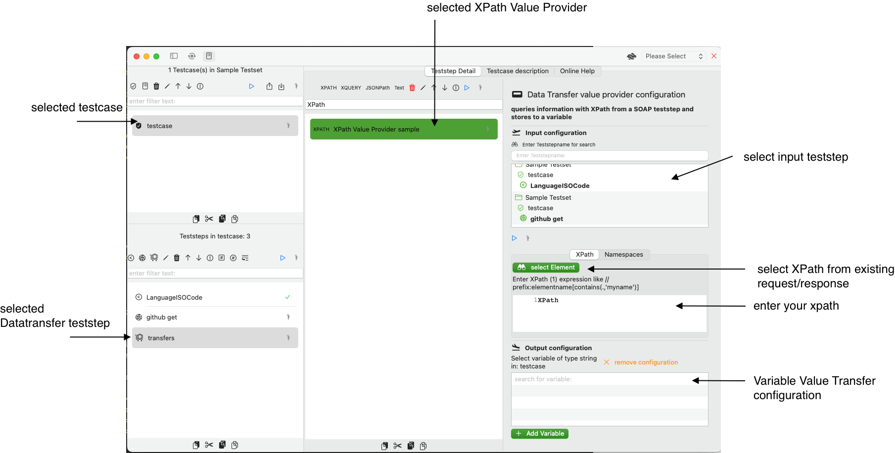
- select input teststep is the first step where you pick a SOAP- or HTTP- Teststep that will hold a request/response
- When you have selected a teststep you can configure, if you want to read the request or response
- select XPath from existing request/response IF you have a teststep that holds a request or response you can select an element here. When the request/response is empty, the view will not show up
- enter your xpath allows you to enter an XPath, please make sure, you use XPath 1. When you edit the XPath we read the namespaces from request/response, otherwise you will have to edit it manually in the tab Namespaces
- A VariableValueTransfer configures the referenced variable that will hold the Xpath expression result
XQuery Value Provider
An XQuery Value Provider allows you to enter a simplified XQuery or XPath expression (which supports unnamed prefixes like *:element) and run the expression against a request or response. The result is stored in a variable as described above. When you create an XQuery Value Provider and select it from the list, you get the following Details view:
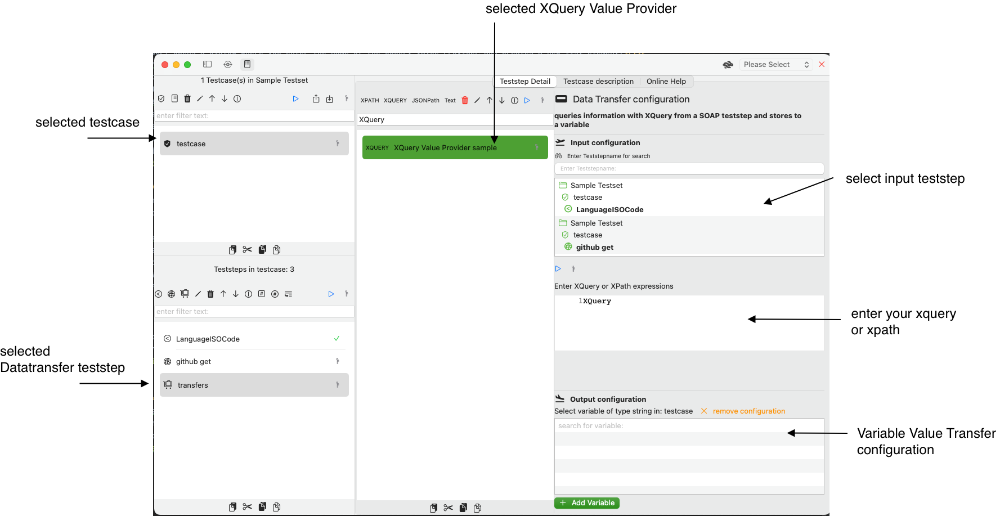
- select input teststep is the first step where you pick a SOAP- or HTTP- Teststep that will hold a request/response
- When you have selected a teststep you can configure, if you want to read the request or response
- enter your XQuery or XPath, this ValueProvider supports a simplified XQuery/XPath 2 expression. As you can use unnamed prefixes like *:element, there is no support for prefix/namespace mappings.
- A VariableValueTransfer configures the referenced variable that will hold the XQuery expression result
JSONPath Value Provider
A JSONPath Value Provider allows you to enter a JSONPath expression and run the expression against an HTTP Teststep request or response
When you create a JSONPath Value Provider and select it from the list, you get the following Details view:
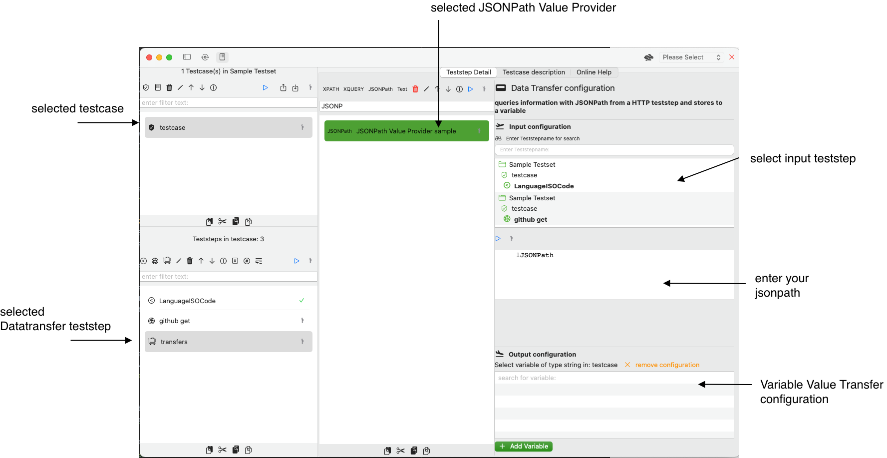
- select input teststep is the first step where you pick an HTTP- Teststep that will hold a request/response
- When you have selected a teststep you can configure, if you want to read the request or response
- enter your jsonpath that will select the elements from your request/response
- A VariableValueTransfer configures the referenced variable that will hold the JSONPath expression result
Text Value Provider
A Text Value Provider allows you to arrange a list of Text transformations in an ordered list to retrieve and transform text. To illustrate how it works, we added a screenshot with a ready-configured Text Value Provider that reads a JSON-response AND has linked a variable that holds the result The operations are applied in the order in which they are defined in the list and can be enabled/disabled, moved up and moved down
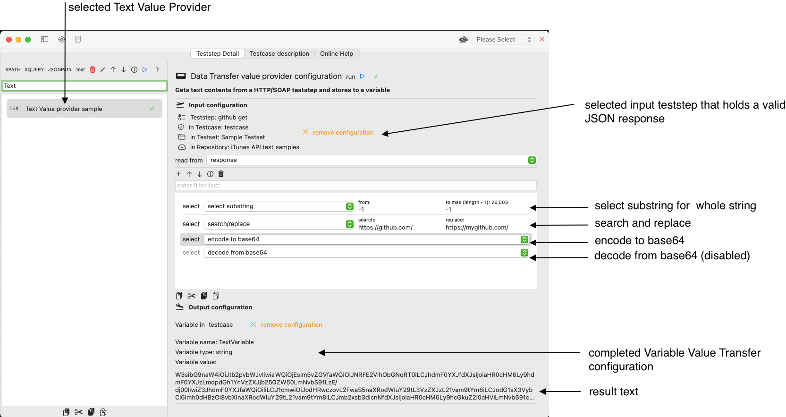
You can include the following operations:
-
select substring with providing start and end index
-
startIndex 0 with endIndex 0 selects the first character
-
startIndex -1 with endIndex -1 selects the whole text
-
search and replace with providing the static search and static replacing text
- encode to base64 creates the base64 representation of the text
- decode from base64 recreates the original text from the base representation, which is disabled in this example
- A VariableValueTransfer configures the referenced variable that will hold the Text expression result
Walkthrough to create an XPath datatransfer
We will create an XPath datatransfer (value provider) with a namespace-aware XPath expression. Be aware that we will use the request for this XPath expression. In general, you may use the response for your query. To make this work, you need to walk through our getting started tutorial. Once you are done, you need to change the request as follows: We will query the value of msg:Element and store it in a testcase variable
<?xml version="1.0" encoding="UTF-8" standalone="yes"?>
<soapenv:Envelope xmlns:soapenv="http://schemas.xmlsoap.org/soap/envelope/">
<soapenv:Header>/soapenv:Header>
<soapenv:Body>
<msg:Enumerate xmlns:msg="http://schemas.xmlsoap.org/ws/2004/09/enumeration">
<!-- continue here -->
<msg:Element>USD</msg:Element>
</msg:Enumerate>
</soapenv:Body>
</soapenv:Envelope>
Input configuration
Click with your mouse on the button create new XPath expression. This will open a dialog. Enter the name currency and confirm with ok. You will see the new datatransfer value provider in the list.
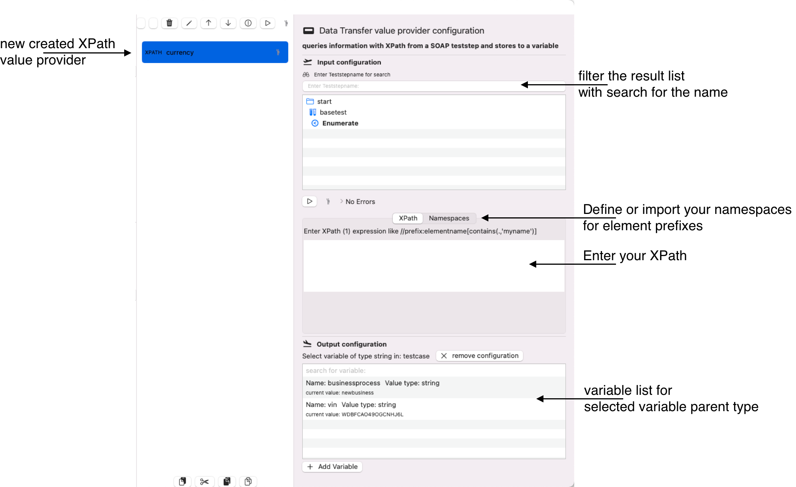
Click with your mouse on the teststep Enumerate. This will link the teststep with the value provider and display the following view:
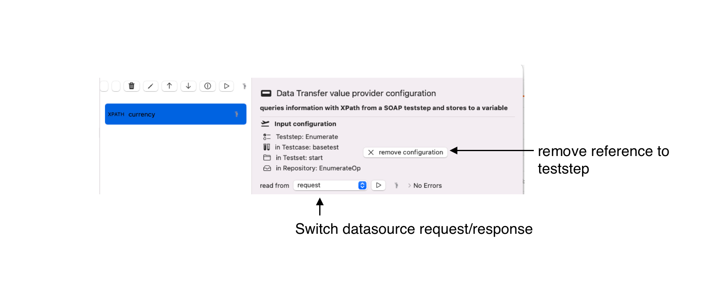
-
You may remove the current teststep reference with the button remove configuration.
-
read from You may switch to request/response of the referenced teststep to query data, default is response.
We need to reference the request for our walkthrough. For this reason the screenshot displays the value request after change from the default as the input type of the value provider. We enter a simple, namespace aware XPath-Expression. //msg:Element/text() Now, we run this XPath expression and will get an error message
Click with your mouse on the button run XPath value provider This will show an error message.
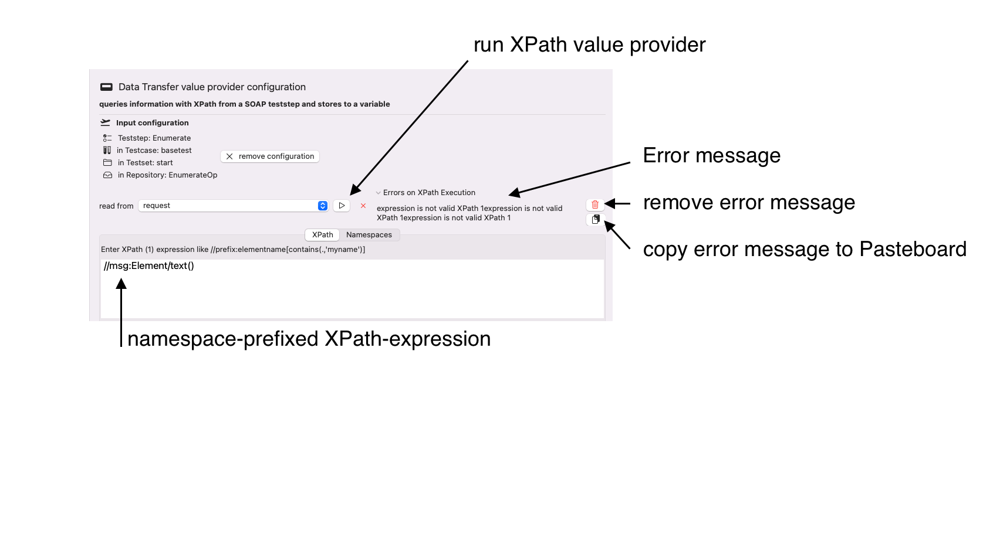
The reason for the error message is an unsatisfied mapping from the prefix to the namespace. This can be resolved very easily. Click on the button remove error message as we don't need this error message.
Switch to to the tab Namspaces and click with your mouse on the button preset namespaces from input teststep
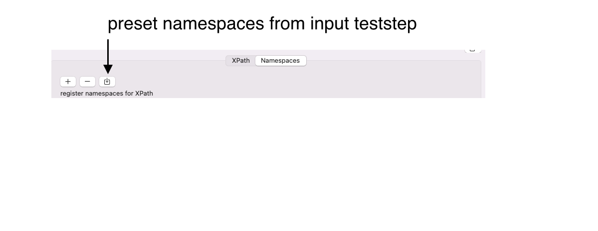
This will load the namespaced defined in the input XML (request) with the prefixes used in the XML. 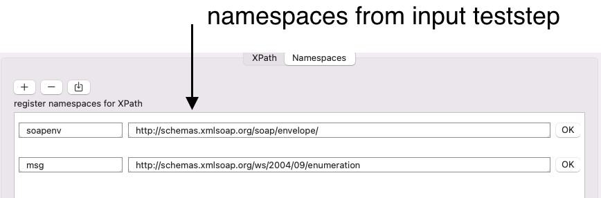
You may run the XPath expression again, and will get error message that no variable has been loaded.
Create your own testcase variable currency.
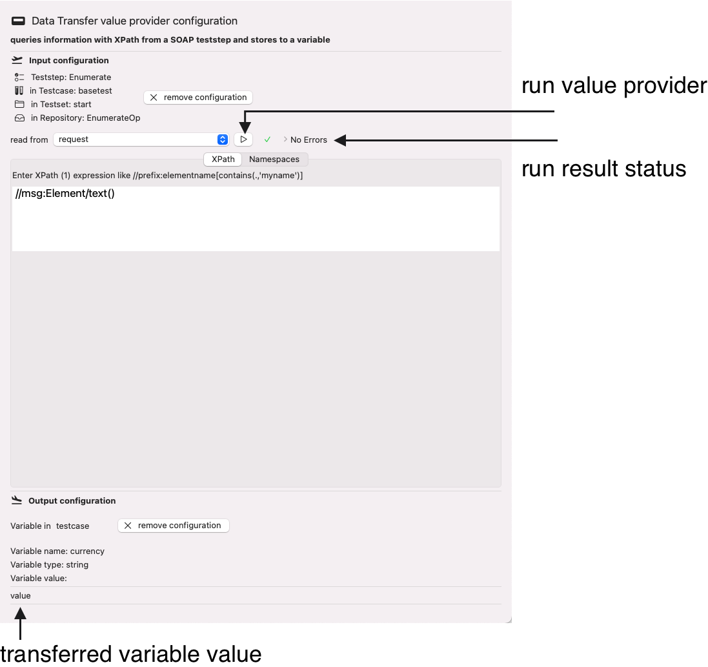